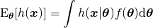
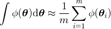
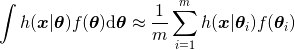
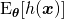

数学的背景
なくしもの位置の推定と遷移失敗確率の学習では次の積分値を計算する必要があります。
この値を解析的に求めることは困難なので近似計算を行います。
まず[0,1]n上の関数φの積分∫φ(θ)dθは、[0,1]n上の一様分布に従う十分多くの乱数θi(i=1,2,...,m)を用いて次のように近似できます。

（言い換えれば、十分たくさんのサンプルについて平均をとると真の平均に近い値になります。）
ここでφは任意の関数なのでなくしもの位置分布の確率密度関数h(x|θ)、遷移失敗確率の確率密度関数fを用いてφ(θ)=h(x|θ)f(θ)と置き換えると次のようになります。

さらにhは各動作毎の利用者位置分布の密度関数biとなくしもの発生確率piを用いてh=p˙bと書けます。 この式の左辺はそのものです。 なのでの値はθi、h(x|θi)、f(θi)という3種類の値を用いて近似できます。
さらに任意のθ∈[0,1]nに対しh(x|θ)はθから（遷移確率と利用者位置分布を用いて）簡単に計算できるので、本質的にθiとf(θi)の2種類の値だけで済みます。